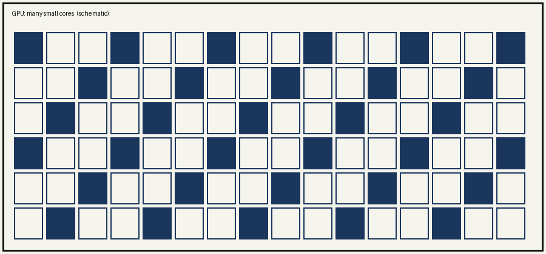

本样例数据由检索摘要整理，未逐项复核，仅用于测试与演示，不作投资依据。
〇、投资要点
沐曦股份是国产通用 GPU 公司，2025 年 12 月 17 日在科创板上市，发行价 104.66 元/股，募资总额 41.97 亿元〔S1〕。2025 年营收 16.44 亿元，同比增长 121.26%，归母净利润仍为 -7.89 亿元〔S3〕。
2026 年上半年归母净利润转正为 6.12 亿元，但其中 8.87 亿元来自公允价值变动收益，扣非净利润仍为 -0.49 亿元，公司自认不可持续〔S4〕。
- 收入高速增长。营收从 2023 年 0.53 亿元增长到 2025 年 16.44 亿元〔S3〕。
- 盈利质量待验证。2026H1 经营现金流 -12.97 亿元，存货 14.32 亿元、预付款 21.96 亿元〔S4〕。
- 估值处于高位。市值约 2,657 亿元，对应 2025 年营收约 162 倍市销率（本报告计算）〔S4〕。
从样例数据看，公司的叙事可以拆成三件事：第一，产品能不能持续被客户采购，这决定收入的可持续性；第二，每多卖一块卡，毛利率能否随规模提升，这决定亏损何时收窄；第三，上市后的高估值是否已经提前反映了未来三到五年的增长，这决定新进入资金的安全边际。三件事互相牵制：客户集中度高会让第一件事变脆弱，研发投入压力大会拖住第二件事，而估值越高，对前两件事的容错率就越低。读者在翻到后面各章时，可以带着这三个问题去核对：每一章的数据到底在回答哪一件事，又有哪些口径需要向管理层确认。
以上为样例数据，仅用于测试与演示，不作投资依据。
一、关键概念及定义
本章假设读者不了解 AI 芯片，从“为什么需要 GPU”讲到“沐曦的产品处在哪个位置”，分三层说明。
1.1 第一层：为什么 AI 需要 GPU
训练和运行大模型需要同时完成海量的矩阵乘法。GPU 拥有成千上万个并行计算单元，适合这类计算，因此成为 AI 算力的主力芯片。

1.2 第二层：通用 GPU 与专用芯片
通用 GPU（GPGPU）可以运行多种算法，生态兼容性好；专用芯片针对特定算法优化，能效更高但灵活性较差。两者的竞争焦点是软件生态与性能功耗比。
1.3 第三层：沐曦的产品处在哪个位置
按用途，AI 芯片可以分成训练、推理和图形三类；按路线，可以分成通用 GPU 和专用加速器。沐曦的主力产品属于通用 GPU 路线中的训推一体型，同时布局推理和图形，这意味着它既要和国际龙头比软件生态，又要和国内同行比交付速度。
- 训练：把大模型从零教会，需要大量卡长时间并行运行，对互联带宽要求高。
- 推理：让训练好的模型回答问题，更看重单位成本和延迟。
- 图形：渲染画面，客户群与前两者不同，但可复用部分硬件设计。
1.4 术语表
| 术语 | 解释 |
|---|---|
| GPGPU | 通用图形处理器，既能做图形渲染，也能做通用并行计算 |
| 训推一体 | 同一款芯片既用于模型训练，也用于推理 |
| 回片点亮 | 芯片流片后拿回样片，首次通电运行成功 |
| 流片 | 把芯片设计交给晶圆厂试生产，一次费用可达数千万元 |
| 算力生态 | 驱动、编译器、框架适配等软件栈，决定硬件能否被客户真正用起来 |
| 互联带宽 | 多卡之间交换数据的速度，影响大模型训练的扩展效率 |
| 市销率 | 市值除以年度营收，亏损公司常用的估值参照 |
二、公司概况
| 主体名称 | 沐曦集成电路（上海）股份有限公司〔S1〕 |
| 股票代码 | 688802（上交所科创板），2025-12-17 上市〔S1〕 |
| 成立时间 | 2020-09-14；2024-12-27 整体变更为股份公司〔S2〕 |
| 注册地 | 上海临港新片区（未经工商核验） |
| 实际控制人 | 陈维良，与上海骄迈、上海曦骥为一致行动人，发行前合计持股 22.94%〔S2〕 |
2.1 股权结构
发行前一致行动人合计 22.94%。按发行后总股本由 36,000 万股增至 40,010 万股稀释，约为 20.64%（本报告计算），与前三大股东合计 20.63% 一致〔S2〕。
2.2 融资历程
| 轮次 | 时间 | 金额 | 投后估值 | 投资方 |
|---|---|---|---|---|
| A 轮 | 2021-08 | 约 10 亿元 | [DATA NEEDED: A 轮估值] | 国调基金、中网投、经纬创投、红杉中国等（媒体转述） |
| Pre-IPO | 2025-02/03 | [DATA NEEDED] | 210.71 亿元 | 两次增资〔S5〕 |
| IPO | 2025-12 | 41.97 亿元 | — | 发行 4,010 万股，净额 38.99 亿元〔S1〕 |
2.3 招股书关键主张核验
| 主张 | 状态 | 证据与说明 |
|---|---|---|
| 国内成立较早的通用 GPU 公司之一 | 部分核验 | 成立时间来自工商信息；“较早”为相对说法，缺少同行成立时间的系统对比。 |
| C500 已部署于多个国家级或省级智算中心 | 无法核验 | 仅见招股书与媒体转述，未见客户或中标公告；[DATA NEEDED: 客户名单与采购合同] |
| 2025 年营收同比增长 121.26% | 已核验 | 7.43 → 16.44 亿元，按年报口径复算一致〔S3〕。 |
| 核心团队来自国际大厂 | 部分核验 | 履历来自招股书和媒体，未逐项向前雇主求证。 |
| 2026H1 利润转正 | 矛盾 | 归母净利润为正，但扣非仍为负，转正主要靠公允价值变动收益；与“经营改善”的表述不一致〔S4〕。 |
以上为样例数据，仅用于测试与演示，不作投资依据。
三、业务与产品
3.1 产品线
| 产品 | 定位 | 进展 |
|---|---|---|
| 曦云 C 系列 | 训推一体通用 GPU | C500 已部署于 10 余个国家级或省级智算中心；C600 已回片点亮；C700 设计中〔S5〕 |
| 曦思 N 系列 | 智算推理芯片 | N300 为 IPO 募投项目〔S5〕 |
| 曦彩 G 系列 | 图形渲染 GPU | 未找到量产信息 |
![产品线示意]()
3.2 收入结构
样例数据显示，曦云 C 系列贡献了大部分收入，其余产品线仍处于投入期。收入结构越集中，对单一产品的依赖越大。
3.3 评判产品的核心技术指标
读规格书时先弄清方向：↑ 越大越好，↓ 越小越好，◎ 越接近目标越好。
| 指标 | 通俗解释 | 方向 | 沐曦 |
|---|---|---|---|
| 算力（TFLOPS） | 每秒能做多少万亿次浮点运算，相当于发动机马力 | ↑ 越大越好 | [DATA NEEDED] |
| 显存带宽 | 芯片读写数据的速度，决定算力能否跑满 | ↑ 越大越好 | [DATA NEEDED] |
| 功耗 | 运行时耗电量，影响机房电费与散热 | ↓ 越小越好 | [DATA NEEDED] |
3.4 客户与下游
| 客户类型 | 占比（样例） | 代表场景 | 集中度风险 |
|---|---|---|---|
| 智算中心 / 政府项目 | 46% | 国产算力集群建设 | 采购节奏受政策影响 |
| 互联网与云厂商 | 29% | 推理与训练外包 | 议价能力强，单客户可占 10% 以上 |
| 金融、能源、运营商 | 17% | 行业大模型落地 | 验证周期长 |
| 其他 | 8% | 科研、教育、渠道 | — |
四、市场与竞品
4.1 竞争格局：上市公司与创业公司
| 公司 | 状态 | 与沐曦相比 |
|---|---|---|
| 摩尔线程 | 2025-12 科创板上市〔S6〕 | 同为全功能 GPU 路线 |
| 寒武纪 | 科创板上市 | 专用 AI 芯片路线，行业对标 |
| 燧原科技 | 2026-09 科创板上市〔S6〕 | 非 GPGPU 架构，客户集中于腾讯 |
| 壁仞科技 | 2026-01 港交所上市〔S6〕 | 通用 GPU 路线 |

国产 GPU 赛道的头部公司已陆续上市，竞争重点正从“能否流片”转向软件生态、量产交付和盈利质量。
4.2 可比公司估值
| 公司 | 路线 | 市销率（样例） | 已披露的盈利状态 |
|---|---|---|---|
| 沐曦股份 | 通用 GPU | 162 倍 | 扣非亏损 |
| 摩尔线程 | 全功能 GPU | 95 倍 | 亏损 |
| 寒武纪 | 专用 AI 芯片 | 70 倍 | 已转盈 |
| 壁仞科技 | 通用 GPU | 58 倍 | 亏损 |
| 燧原科技 | 专用 AI 芯片 | 45 倍 | 亏损 |
| 行业中位数 | — | 20 倍 | — |
五、团队
| 姓名 / 职务 | 履历 | 核验情况 |
|---|---|---|
| 陈维良 董事长、总经理 | 此前在 AMD 约 13 年，任全球 GPGPU 设计总负责人 | 部分核验（媒体转述） |
| 彭莉 CTO（硬件） | 此前为 AMD Fellow | 部分核验（媒体转述） |
| 杨建 CTO（软件） | 此前为 AMD 大中华区 Fellow，早年任职海思 | 部分核验（媒体转述） |
| 张某某 首席科学家 | 样例人物。曾任某国际大厂架构师，主导过多代 GPU 微架构设计，在顶级会议发表论文十余篇。 | 无法核验 |
| 李某某 CFO | 样例人物。曾任大型半导体上市公司财务负责人，经历两次再融资和一次并购整合。 | 已核验 |
| 王某某 销售负责人 | 样例人物。此前负责服务器 CPU 的互联网客户，熟悉大客户采购流程。 | 部分核验 |
| 赵某某 生态负责人 | 样例人物。负责框架适配与开发者社区，团队规模约 200 人。 | [DATA NEEDED: 团队规模核验] |
六、经营与里程碑
6.1 收入与利润
| 亿元 | 2023 | 2024 | 2025 | 2026H1 |
|---|---|---|---|---|
| 营业收入 | 0.53 | 7.43 | 16.44 | 13.24 |
| 归母净利润 | -8.71 | -14.09 | -7.89 | 6.12 |
来源：〔S3, S4〕。2023 年数据另有媒体口径为营收 1.07 亿元、亏损 8.46 亿元，本样例未采用。
6.2 净利润桥接
6.3 里程碑
| 时间 | 事件 | 状态 |
|---|---|---|
| 2020-09 | 公司成立 | 已核验 |
| 2021-08 | A 轮融资约 10 亿元 | 部分核验 |
| 2022 年 | 首款产品回片点亮 | 部分核验 |
| 2023 年 | 首批客户导入 | 无法核验 |
| 2024-12 | 整体变更为股份公司 | 已核验 |
| 2025-02/03 | Pre-IPO 两次增资 | 已核验 |
| 2025-12 | 科创板上市 | 已核验 |
| 2026-09 | 首批限售股解禁 | 已核验 |
| 2027 年（计划） | 下一代产品流片 | [DATA NEEDED: 流片进度] |
以上为样例数据，仅用于测试与演示，不作投资依据。
七、估值与交易
Pre-IPO 投后估值 210.71 亿元〔S5〕，2026 年 9 月市值约 2,657 亿元〔S4〕，约为 Pre-IPO 估值的 12.6 倍（本报告计算）。按 2025 年营收计算，市销率约 162 倍（本报告计算）。
7.1 敏感性：市销率与营收假设
| 2027E 营收（亿元） | 30 倍 | 50 倍 | 80 倍 | 120 倍 |
|---|---|---|---|---|
| 25 | 750 | 1,250 | 2,000 | 3,000 |
| 40 | 1,200 | 2,000 | 3,200 | 4,800 |
| 60 | 1,800 | 3,000 | 4,800 | 7,200 |
| 当前市值（亿元） | 约 2,657（2026-09） | |||
表中为市值（亿元）= 营收 × 市销率，按“本报告计算”，仅用于说明估值对假设的敏感度。
八、风险与合规
总结
样例结论：收入高速增长已被验证，盈利质量与现金流是下一阶段的关键观察点。
- 看多核心
- C500 已在多个智算中心部署，收入连续高增长
- 看空核心
- 扣非亏损、经营现金流为负、估值处于高位
附录 A：管理层访谈问题清单
- A 轮与 Pre-IPO 各轮的金额与估值。
- 主要产品的算力、显存带宽与功耗实测值。
- 前五大客户的名称、金额、合同期限，以及是否存在关联关系。
- 存货 14.32 亿元与预付款 21.96 亿元的构成，减值测试的方法与结论。
- 2026H1 公允价值变动收益 8.87 亿元的来源，是否可能在下半年回吐。
- 扣非净利润转正的时间表，以及对应的毛利率和费用率假设。
- 研发投入的资本化比例，与同行相比的会计政策差异。
- 下一代产品的流片计划、预计量产时间与良率目标。
- 软件生态的适配进度：主流框架与大模型的覆盖情况。
- 核心技术人员的竞业限制与股权激励安排。
- 2028 年大额解禁的具体规模，大股东是否有减持计划。
- 募投项目的资金使用进度，是否存在变更用途的可能。
- 海外制裁与供应链风险：晶圆代工与先进封装的替代方案。
- 2023 年两种财务口径差异的原因，应以哪一版为准。
附录 B：数据来源
- 〔S1〕沐曦股份上市公告书（证券之星转载），2025-12-15
- 〔S2〕沐曦股份上市保荐书，上交所，2025-10-24
- 〔S3〕新浪财经，沐曦股份 2025 年年报解读，2026-03-26
- 〔S4〕腾讯新闻，沐曦股份 2026 年半年报分析，2026-09-03
- 〔S5〕搜狐 / AI 资本局，沐曦 IPO 分析，2025-10-19
- 〔S6〕同花顺，国产 GPU 公司上市进展，2026-09-09
- 〔S7〕样例来源 7，行业研究报告摘要，2026-06-01（样例）
- 〔S8〕样例来源 8，交易所问询函回复，2025-11-20（样例）
- 〔S9〕样例来源 9，公司投资者关系记录，2026-04-12（样例）
附录 C：财务明细（样例数据）
| 亿元 | 2023 | 2024 | 2025 | 2026H1 |
|---|---|---|---|---|
| 营业收入 | 0.53 | 7.43 | 16.44 | 13.24 |
| 营业成本 | 0.41 | 3.80 | 8.90 | 6.50 |
| 毛利 | 0.12 | 3.63 | 7.54 | 6.74 |
| 销售费用 | 0.30 | 0.90 | 1.60 | 1.10 |
| 管理费用 | 0.80 | 1.50 | 2.10 | 1.20 |
| 研发费用 | 8.20 | 13.00 | 13.70 | 7.50 |
| 其他收益 | 0.10 | 0.30 | 0.60 | 0.40 |
| 公允价值变动收益 | 0.00 | 0.00 | 0.00 | 8.87 |
| 营业利润 | -8.88 | -14.07 | -7.86 | 6.15 |
| 利润总额 | -8.88 | -14.07 | -7.86 | 6.15 |
| 所得税 | 0.00 | 0.00 | 0.00 | 0.00 |
| 归母净利润 | -8.71 | -14.09 | -7.89 | 6.12 |
| 经营现金流 | -6.20 | -10.50 | -9.80 | -12.97 |
| 投资现金流 | -1.10 | -2.30 | -30.20 | -5.60 |
| 筹资现金流 | 9.00 | 14.00 | 41.97 | 0.00 |
| 存货 | 0.80 | 3.50 | 9.90 | 14.32 |
| 预付款 | 1.20 | 6.00 | 15.80 | 21.96 |
| 总资产 | 12.0 | 28.0 | 75.0 | 80.0 |
以上为样例数据，仅用于测试与演示，不作投资依据。
数据说明：标注“本报告计算”的数字由所列输入推导得出；[DATA NEEDED] 表示信息缺口。